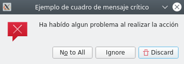

Fins ara hem utilitzat el component QMainWindow per treballar amb les nostres aplicacions. En aquest apartat estudiarem com mostrar o demanar informació a l'usuari a través de diversos tipus de finestres.
1.1. Diàlegs
1.1.1. QDialog
Tal com el seu nom indica, els diàlegs són finestres emergents temporals que ens permeten comunicar-nos amb l'usuari de l'aplicació i que apareixen a causa de la producció d'un esdeveniment. Són finestres modals, és a dir, bloquegen la interacció amb la resta de l'aplicació fins que se n'acabe l'execució, siga tancant-los o introduint la informació que es demana.
Per aquest motiu, necessiten el seu propi bucle d'esdeveniments. Es pot evitar el bloqueig de l'execució amb l'ús de fils d'execució, però queda fora de l'abast d'aquest mòdul. S'hi hauria d'aplicar els coneixements adquirits al mòdul de Programació de Serveis i Processos als desenvolupaments en Qt.
A Qt els diàlegs s'implementen com a classes de QDialog o les seves derivades.
fromPySide6.QtWidgetsimportQApplication,QDialog,QMainWindow,QPushButtonclassVentanaPrincipal(QMainWindow):def__init__(self):super().__init__()self.setWindowTitle("Aplicación con diálogos")boton=QPushButton("Haz clic para que el dialogo aparezca")boton.clicked.connect(self.mostrar_dialogo)self.setCentralWidget(boton)defmostrar_dialogo(self):print("Clic recibido, se mostrará el dialogo.")ventana_dialogo=QDialog(self)ventana_dialogo.setWindowTitle("Ventana de dialogo")ventana_dialogo.exec()app=QApplication([])ventana_principal=VentanaPrincipal()ventana_principal.show()app.exec()
1.1.2. Diàlegs personalitzats
Un cop sabem crear un diàleg, anem a personalitzar-lo. Podem fer servir els QPushButton estudiats anteriorment, però a Qt hi ha una sèrie de botons predefinits dissenyats segons les guies d'estil de les diferents plataformes. Es recomana consultar aquestes guies perquè les nostres aplicacions siguen el més naturals a l'usuari.
Els botons predefinits a Qt es troben al mòdul QDialogButtonBox com a propietats. A continuació mostrem la llista completa d'estos, que deuria ser suficient per a qualsevol aplicació:
QDialogButtonBox.Ok
QDialogButtonBox.Open
QDialogButtonBox.Save
QDialogButtonBox.Cancel
QDialogButtonBox.Close
QDialogButtonBox.Discard
QDialogButtonBox.Apply
QDialogButtonBox.Reset
QDialogButtonBox.RestoreDefaults
QDialogButtonBox.Help
QDialogButtonBox.SaveAll
QDialogButtonBox.Yes
QDialogButtonBox.YesToAll
QDialogButtonBox.No
QDialogButtonBox.Abort
QDialogButtonBox.Retry
QDialogButtonBox.Ignore
QDialogButtonBox.NoButton
Al següent exemple afegirem diversos botons a la nostra finestra. Per fer-ho:
Crearem una variable amb els nostres botons separats per l'operador lògic or “|”, ja que realment, els botons són variables binàries.
Passarem aquesta variable com a primer paràmetre a QDialogButtonBox, que contindrà tots els nostres botons.
Connectem els senyals dels botons a la ranura que desitgem. El més normal és utilitzar com a ranura les ja predefinides.
fromPySide6.QtWidgetsimport(QMainWindow,QApplication,QDialog,QDialogButtonBox,QVBoxLayout,QLabel,QPushButton)classDialogoPersonalizado(QDialog):def__init__(self,parent=None):super().__init__(parent)self.setWindowTitle("Dialogo personalizado")botones=QDialogButtonBox.Ok|QDialogButtonBox.Cancelself.caja_botones=QDialogButtonBox(botones)self.caja_botones.accepted.connect(self.accept)self.caja_botones.rejected.connect(self.reject)self.layout_dialogo=QVBoxLayout()self.layout_dialogo.addWidget(QLabel("Estás seguro de querer realizar esta acción?"))self.layout_dialogo.addWidget(self.caja_botones)self.setLayout(self.layout_dialogo)classVentanaPrincipal(QMainWindow):def__init__(self):super().__init__()self.setWindowTitle("Aplicación con diálogo personalizado")boton=QPushButton("Haz clic para que el dialogo aparezca")boton.clicked.connect(self.mostrar_dialogo)self.setCentralWidget(boton)defmostrar_dialogo(self):print("Clic recibido, se mostrará el dialogo.")ventana_dialogo=DialogoPersonalizado(self)ventana_dialogo.setWindowTitle("Ventana de dialogo personalizado")# 1 si s'executa accept# 0 si s'executa rejectresultado=ventana_dialogo.exec()ifresultado:print("Aceptada")else:print("Cancelada")app=QApplication([])ventana_principal=VentanaPrincipal()ventana_principal.show()app.exec()
Traducció de diàlegs
Si executem el codi, observem que els botons mostren el text en anglès. Podem utilitzar el següent mètode per traduir els controls predefinits:
A l'apartat anterior, hem personalitzat un QDialog, però hi ha quadres de diàleg ja predissenyats a Qt. Es troben disponibles al mòdul QMessageBox i hi ha quatre tipus segons el nivell de severitat de la informació (question, information, warning i critical). Realment, lúnica diferència entre ells és la icona que mostren. A la taula següent es mostren els nivells:
Icona
Tipus de QMessageBox
Ús
Question
Preguntes a l'usuari en accions normals.
Information
nformació a l'usuari en accions normals.
Warning
Informació per a errors no crítics.
Critical
Informació per a errors crítics.
Igual que en els QDialog, hi ha botons predefinits que podem utilitzar a les nostres QMessageBox. Aquesta és la llista d'ells:
fromPySide6.QtCoreimportQLibraryInfo,QTranslatorfromPySide6.QtWidgetsimport(QApplication,QMessageBox,QMainWindow,QPushButton)classVentanaPrincipal(QMainWindow):def__init__(self):super().__init__()self.setWindowTitle("Aplicación con mesaje crítico")boton=QPushButton("Haz clic para ver el mensaje crítico")boton.clicked.connect(self.mostrar_dialogo)self.setCentralWidget(boton)defmostrar_dialogo(self):boton_pulsado=QMessageBox.critical(self,"Ejemplo de cuadro de mensaje crítico","Ha habído algun problema al realizar la acción",buttons=QMessageBox.Discard|QMessageBox.NoToAll|QMessageBox.Ignore,defaultButton=QMessageBox.Discard)ifboton_pulsado==QMessageBox.Discard:print("Descartado!")elifboton_pulsado==QMessageBox.NoToAll:print("No a todo!")else:print("Ignorado!")defcargar_traductor(app):translator=QTranslator(app)translations=QLibraryInfo.location(QLibraryInfo.TranslationsPath)translator.load("qt_ca",translations)app.installTranslator(translator)app=QApplication([])cargar_traductor(app)ventana_principal=VentanaPrincipal()ventana_principal.show()app.exec()
El resultat és el següent:

1.3. Altres diàlegs
Hi ha altres tipus de diàlegs que podeu trobar al mòdul QtWidgets. Aquests són més específics:
QColorDialog: per especificar colors
QFileDialog: per especificar fitxers o carpetes
QFontDialog: per seleccionar les fonts
QInputDialog: per demanar dades a l'usuari
QProgressDialog: per informar del progrés d'una operació lenta
Vegem uns simples exemples que poden resultar útils (ometem la part general de l'aplicació per mostrar només la part que ens interessa):
defmostrar_dialeg(self):finestra_dialeg=QFileDialog.getOpenFileName(self,caption="Obrir fitxer...",dir=".",filter="Documents de text (*.txt);;Documents PDF (*.pdf)",selectedFilter="Documents de text (*.txt)")fitxer=finestra_dialeg[0]
NOTA: Si el fitxer ja existeix ens demana confirmació de sobreescriptura
defmostrar_dialeg(self):finestra_dialeg=QFileDialog.getSaveFileName(self,caption="Desa fitxer ...",dir=".",filter="Documents de text (*.txt);;Documents PDF (*.pdf)",selectedFilter="Documents de text (*.txt)")fitxer=finestra_dialeg[0]print(arxiu)
defmostrar_dialeg(self):color=QColorDialog.getColor()ifcolor.isValid():# Amb la següent línia assignem el color seleccionat# com a color de fons del botó a través de CSSself.boton.setStyleSheet(f"background-color: {color.name()}")
defmostrar_dialeg(self):mes,seleccionat=QInputDialog.getItem(self,"Mes de naixement","Messos",["Gener","Febrer","Març","Abril","Maig","Juny","Juliol","Agost","Setembre","Octubre","Novembre","Desembre"])ifseleccionat:print(mes)
Amb QProgressDialog podem mostrar la informació de com avança un procés lent. Aquest tipus de processos s'haurien de llançar en un fil d'execució perquè la interfície no quede bloquejada en espera que el procés s'acabe. Simularem una còpia de fitxers llançada amb un fil d'execució. El codi següent engloba conceptes del mòdul de Programació de Serveis i Processos.
importtimefromPySide6.QtCoreimportQThread,SignalfromPySide6.QtWidgetsimport(QMainWindow,QPushButton,QProgressDialog,QApplication)# Classe Fil que simula un procés lentclassHilo(QThread):# Senyal que transmet un nombre sencer al seu escoltador o ranurasenyal=Signal(int)def__init__(self):super(Hilo,self).__init__()self.cancel·lat=Falsedef__del__(self):self.wait()# Mètode que s'executa en llançar el fil# Mentre no es cancel·li, el fil emetrà un senyal amb un# sencer entre 0 i 10 cada 0,3 segonsdefrun(self):foriinrange(11):ifnotself.cancel·lat:self.senyal.emit(i)time.sleep(0.5)else:breakclassFinestraPrincipal(QMainWindow):def__init__(self):super().__init__()self.setWindowTitle('Aplicació amb QProgressDialog')self.boton=QPushButton('Clic per iniciar la còpia de fitxers')self.boton.clicked.connect(self.mostrar_dialeg_progrés)self.setCentralWidget(self.boton)defmostrar_dialeg_progrés(self):# Deshabilitem el botó per evitar que es llanci un altre filself.boton.setEnabled(False)# Creem un QProgessDialog entre 0 i 10 i un botó Cancel·laself.barra_progrés=QProgressDialog("Copiant fitxers ...","Cancel·lar",0,10,self)self.barra_progreso.setWindowTitle("Diàleg de progrés")# Connectem el senyal cancel·lat del QProgressDialog a la ranuraself.barra_progreso.canceled.connect(self.cancelar)# Creem un fil d'execucióself.fil=Fil()# Connectem el senyal del fil a la ranuraself.fil.senyal.connect(self.senyal_rebuda)# Llancem l'execució del filself.fil.start()# Mostrem la barra de progrésself.barra_progreso.show()defsenyal_rebuda(self,progrés):# Quan rebem el senyal del fil, incrementem# el progrés amb el valor rebutself.barra_progreso.setValue(int(progrés))# Quan arribi al 100% esperem 0.5si tanquem el diàlegifint(progrés)==10:time.sleep(0.5)self.barra_progreso.close()# En donar-li al botó cancel·lar del diàleg, aturem l'enviament de senyals.# El diàleg es tancarà i el botó el tornem a habilitardefcancel·lar(self):self.fil.cancel·lat=Trueself.boton.setEnabled(True)if__name__=="__main__":app=QApplication([])finestra_principal=FinestraPrincipal()finestra_principal.show()app.exec()
1.4. Altres finestres
Fins ara hem vist diferents diàlegs modals que executen al seu propi bucle d'esdeveniments i bloquegen la resta de l'aplicació. Però de vegades ens pot interessar obrir una altra finestra sense bloquejar la finestra principal.
Finestres
A Qt, qualsevol widget sense parent és una finestra. Això, a efectes pràctics, vol dir que per mostrar una finestra nova, només hem de crear un Widget i cridar al seu mètode show(). Fixa't que fins i tot podríem crear una aplicació amb diversos QMainWindows.
fromPySide6.QtWidgetsimport(QApplication,QMainWindow,QPushButton,QLabel,QVBoxLayout,QWidget)classOtraVentana(QLabel):def__init__(self):super().__init__()self.setText("La otra ventana")classVentanaPrincipal(QMainWindow):def__init__(self):super().__init__()self.otra_ventana=None# Referència nulaself.setWindowTitle("Aplicación con dos ventanas")self.boton=QPushButton("Mostrar/ocultar otra ventana")self.boton.clicked.connect(self.mostrar_otra_ventana)self.setCentralWidget(self.boton)defmostrar_otra_ventana(self):ifself.otra_ventanaisNone:self.otra_ventana=OtraVentana()self.otra_ventana.move(self.pos())self.otra_ventana.show()else:ifself.otra_ventana.isHidden():self.otra_ventana.move(self.pos())self.otra_ventana.show()else:self.otra_ventana.hide()app=QApplication([])ventana_principal=VentanaPrincipal()ventana_principal.show()app.exec()